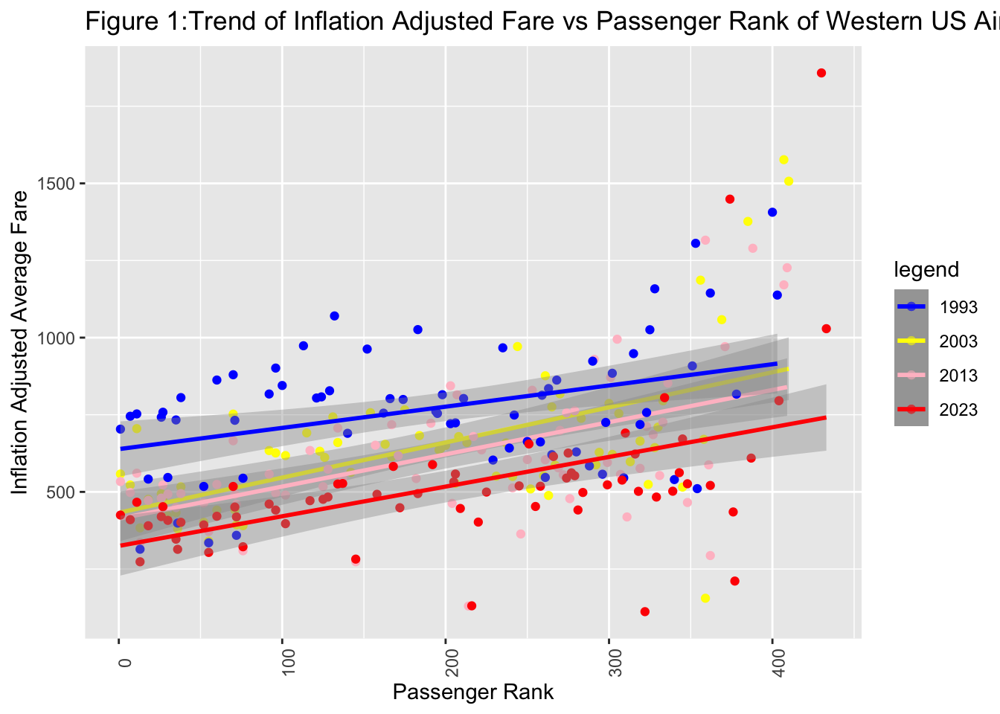
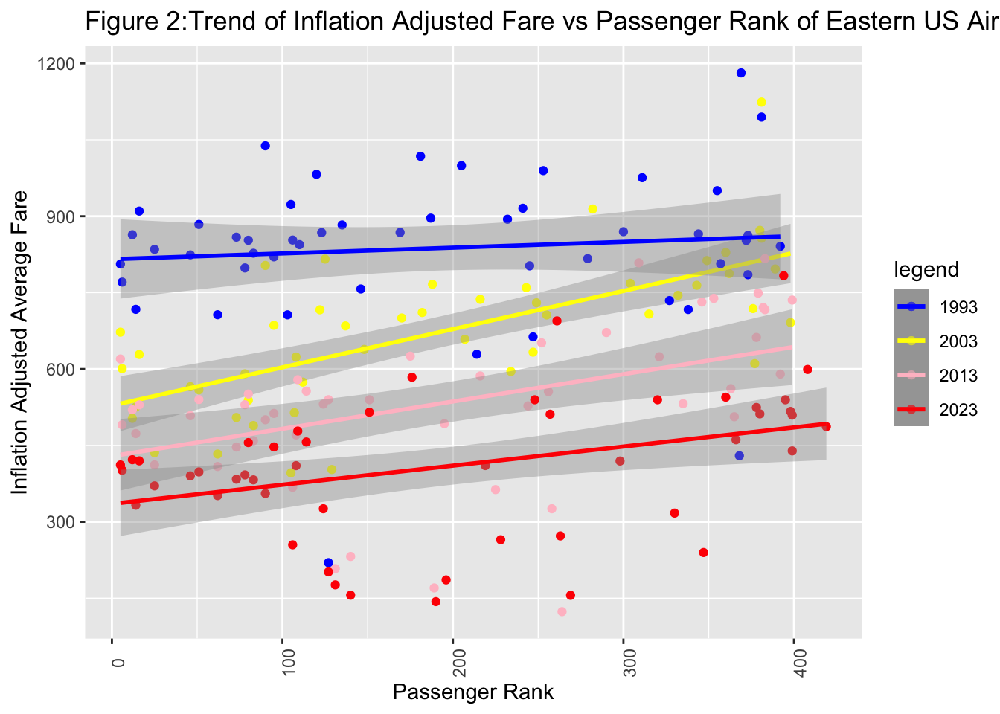
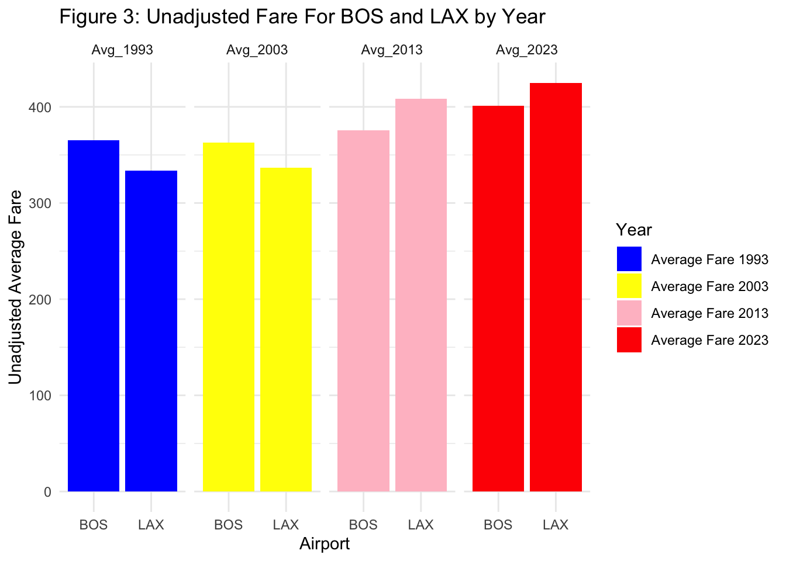

[1] 546Adaeze Obinelo’s PM566 Final
INVESTIGATION
Background:
Today’s political, economic, and social climate seems to be, on a good day, a succession of inconveniences, and on the worst of days, a never-ending cascade of unprecedented challenges and horrors. Especially thanks to recent economic inflation, everyday necessities are taking a greater and greater toll on the average consumer’s wallet. Via the consumer price index (CPI) (NBC news, 2023), the overall costs of food, gas and shelter increased significantly over the summer. This increase was certainly felt acutely here in Los Angeles, where gas rose as high as $6 in some areas, and food prices continued to climb. Purchasing my airfare home this year, I felt the sting on my wallet particularly severely, and I found myself wondering “were airplane tickets always this high?”. I am not inexperienced in air travel, having flown frequently prior to college for athletics, during undergrad, and now as an adult to visit family. For some reason, when I think back to purchasing my tickets in the past, I cannot recall feeling the same unenthusiastic and reluctant resignation that I felt this year. For this reason, I thought it would be an interesting investigation to answer the following question; “How has airfare changes in the past few decades”. The present report aims to do exactly this, using the United States Bureau of Transportation Statistics (BTS) data on airfare.
Analysis: Am I really paying more to fly home for thanksgiving than anyone ever has before?
Precise research question: Is flying round trip from LAX to Logan Airport(BOS) more expensive on average than it has been in previous decades, when adjusting for 2023 inflation?
Extra: What would be the most expensive airport to fly out of in 2023? What would be the least expensive?
About Dataset
The following analysis was conducted using the United States Bureau of Transportation Statistic’s (BTS) record of Average Domestic Itinerary Fares. The dataset compiles average flight fares by airport by year, and ranks these fares by a variable called “2022 Passenger Rank”. “Passenger Rank” is an ordinal variable calculated by comparing the value equivalent to 10% of all passengers served in 2022 (a variable also included in each dataset).
Source:
You can download the datasets here
Update Schedule
Datasets are compiled each financial quarter, and appear to be updated bi-yearly (the most recent dataset is from the 2nd quarter of 2023).
Quick Look/Summary
1993
PassRank_1993 Airport Airport Name City Name
Length:546 Length:546 Length:546 Length:546
Class :character Class :character Class :character Class :character
Mode :character Mode :character Mode :character Mode :character
State Name Avg_1993 Adjusted_Avg_Fare_Q2_1993
Length:546 Length:546 Length:546
Class :character Class :character Class :character
Mode :character Mode :character Mode :character
_1993v2022_Passengers
Length:546
Class :character
Mode :character 2003
[1] 512 Pass_Rank_2003 Airport Airport Name City Name
Length:512 Length:512 Length:512 Length:512
Class :character Class :character Class :character Class :character
Mode :character Mode :character Mode :character Mode :character
State Name Avg_2003 Adjusted_Avg_Fare_Q2_2003
Length:512 Length:512 Length:512
Class :character Class :character Class :character
Mode :character Mode :character Mode :character
_2003v2022_Passengers
Length:512
Class :character
Mode :character 2013
[1] 441 Pass_Rank_2003 Airport Airport Name City Name
Length:512 Length:512 Length:512 Length:512
Class :character Class :character Class :character Class :character
Mode :character Mode :character Mode :character Mode :character
State Name Avg_2003 Adjusted_Avg_Fare_Q2_2003
Length:512 Length:512 Length:512
Class :character Class :character Class :character
Mode :character Mode :character Mode :character
_2003v2022_Passengers
Length:512
Class :character
Mode :character 2023
[1] 445 Pass_Rank_2003 Airport Airport Name City Name
Length:512 Length:512 Length:512 Length:512
Class :character Class :character Class :character Class :character
Mode :character Mode :character Mode :character Mode :character
State Name Avg_2003 Adjusted_Avg_Fare_Q2_2003
Length:512 Length:512 Length:512
Class :character Class :character Class :character
Mode :character Mode :character Mode :character
_2003v2022_Passengers
Length:512
Class :character
Mode :character Methods
Due to the data limitations for the current financial year, data from the second financial quarter of 4 years, 1993, 2003, 2013, and 2023 was utilized for analysis. A 10 year spread was thought to be ideal for assessing the general trends in airfare data. The datasets from this chosen time frames were downloaded directly from the Transportation Bureau’s website, using the above link, into .csv files.
As part of data processing, variables names were altered to aid in the coding process. Variable types were changed to the appropriate type (numeric or character).
Missing Values: Included in each dataset was ‘2022 Passengers’, a variable which compares the amount of domestic passengers each airport sees in 2022. A missing value or a value of 0 indicate these airports don’t provide commercial domestic flights, so entries with these values were removed since they would not be airports the consumer is choosing from.
Coordinate data: For the purpose of additional analysis, coordinate data was taken from The Humanitarian Data Exchange which compiled a dataset of longitude and latitude values for 508 major US airports. This coordinate dataset was merged with the BTS datasets.
Validation: Cross-validation was done by comparing the inflation adjusted fare variable for each year (Adjusted_Avg_Fare_Q2) provided originally with my dataset with an dollar to dollar conversion between that year and 2023.
Conversions:
1993: 1->2.13
2003: 1->1.67
2013: 1->1.32
Adjusted_Avg_Fare_Q2_1993 check.adj.93 Adjusted_Avg_Fare_Q2_2003 check.adj.03
1 219.846 221.9758 402.720 406.0605
2 267.383 269.9732 393.425 396.6885
3 281.144 283.8672 385.678 388.8779
4 283.787 286.5361 400.977 404.3037
5 286.958 289.7375 379.557 382.7055
Adjusted_Avg_Fare_Q2_2013 check.adj.13 Adjusted_Avg_Fare_Q2_2023 check.adj.23
1 208.124 210.4159 176.255 176.255
2 544.805 550.8070 461.966 461.966
3 457.750 462.7933 392.579 392.579
4 516.517 522.2078 443.932 443.932
5 439.538 444.3806 355.561 355.561The results indicate a very close coincidence between the BTS inflation adjusted fare and our calculated conversion variable, indicating that the dataset is valid with regards to fare cost.
Analysis: Given that the research question centers around LAX and BOS airports, the overall dataset was queried for trends in relation to these two airports. Due to the great geographic distance between these airports, the overall dataset was stratified by location to better understand region-specific baseline trends. Scatterplots were used to visualize trends between continuous variables. Bar plots were used to visualize continuous variables by categorical variables.
Results
# A tibble: 50 × 5
`State Name` Avg_1993 Avg_2003 Avg_2013 Avg_2023
<chr> <dbl> <dbl> <dbl> <dbl>
1 AK 375. 493. 596. 641.
2 AL 417. 402. 534. 568.
3 AR 333. 400. 441. 519.
4 AZ 386. 353. 468. 527.
5 CA 353. 343. 402. 403.
6 CO 339. 446. 526. 551.
7 CT 415. 415. 414. 300.
8 DC 415. 398. 424. 457.
9 FL 359. 315. 361. 388.
10 GA 477. 409. 475. 557.
# ℹ 40 more rowsState with Highest Average Airfare in 1993
# A tibble: 1 × 2
`State Name` Avg_1993
<chr> <dbl>
1 GA 477.State with Highest Average Airfare in 2003
# A tibble: 1 × 2
`State Name` Avg_2003
<chr> <dbl>
1 NM 531.State with Highest Average Airfare in 2013
# A tibble: 1 × 2
`State Name` Avg_2013
<chr> <dbl>
1 AK 596.State with Highest Average Airfare in 2023
# A tibble: 1 × 2
`State Name` Avg_2023
<chr> <dbl>
1 AK 641.Bird’s eye view: Comparing Airport Fare to Passenger Rank
Airport Pass_Rank_2023 Pass_Rank_2013 Pass_Rank_2003 PassRank_1993
1 BOS 6 6 6 6
2 LAX 1 1 1 1Both LAX and BOS consistently rank among the top 10 for passenger rank for all 4 years.
Passenger Rank vs Inflation Adjusted fare in the West
`geom_smooth()` using formula = 'y ~ x'
`geom_smooth()` using formula = 'y ~ x'
`geom_smooth()` using formula = 'y ~ x'
`geom_smooth()` using formula = 'y ~ x'
As the Passenger Rank decreases, broadly speaking so does the cost of the average inflation adjusted flight in the West. Additionally, compared to previous years, 2023 fares range lower than the fares from the years prior, excluding a few outliers in the lower passenger rank region of the graph.
Passenger Rank vs Inflation Adjusted fare in the East
`geom_smooth()` using formula = 'y ~ x'
`geom_smooth()` using formula = 'y ~ x'
`geom_smooth()` using formula = 'y ~ x'
`geom_smooth()` using formula = 'y ~ x'
It does not look like this trend of increasing airfare with increasing passenger rank is as strong in the east. Again, 2023 fares range lower than in previous decades when comparing inflation adjusted averages. From these figures, its starting to look like I might actually be paying less to fly out of LAX and BOS, two high traffic airports, than I would be in previous years.
Geographic Un-adjusted Fare Comparison

Looking specifically at Logan and LAX by year, it appears that the average ticket out of Logan stagnated between 1993 and 2003, then uptrended between 2013 and 2023. The average ticket out of LAX uptrended slightly between 1993 and 2003, then increased more significantly between 2013 and 2023. On average, the price of a ticket out of Logan was higher than a ticket out of LAX in 1993 and 2003, but below a ticket our of LAX in 2013 and 2023.
How much compared to 1993?
Airport comp_fare
1 BOS 369.449
2 LAX 278.577[1] 648.026On average, I would be paying $648 more for a round trip in 1993 when comparing inflation adjusted rates. So it looks like, at least comparing the years that I did, I actually have it better off with what I pay now compared to what I would be paying in 1993.
Conclusion
Evidently, by inflation adjusted values, I am paying less for a trip between LAX and BOS than I have in the past. This begs the question of why it feels as if I am not. This can probably be answered best by looking at the unadjusted fare comparisons in Figure 3. Looking specifically at unadjusted fares out of Logan and LAX by year which show that overall, the unadjusted fare for airline tickets out of LAX and BOS are higher in 2023 than compared to years prior. While inflation adjusted values provide a good gauge of the “true” cost of a purchase in relation to the strength of the dollar, unadjusted amounts are the “ouch” one feels when actually paying for something in the moment. Since the unadjusted values are higher than they have been in the past, this is likely why it anecdotally feels like airfare prices are going up. The above study does have significant limitations, namely that limitations in man-power limit our analysis to 4 timepoints separated by a decade. Due to this, this analysis definitely misses more acute variation in the dataset, and additionally does not account for the remaining financial quarters of the year.The above study does have significant limitations, namely that limitations in man-power limit our analysis to four time points separated by a decade. Due to this, this analysis definitely misses more acute variation in the dataset, and additionally does not account for the remaining financial quarters of the year. However, limited though it may be, it does provide a bit of assurance to those of us purchasing airfare.
Cost Map
Please see “Cost Map” tab to view extra maps and the airport with the least and most expensive fare!